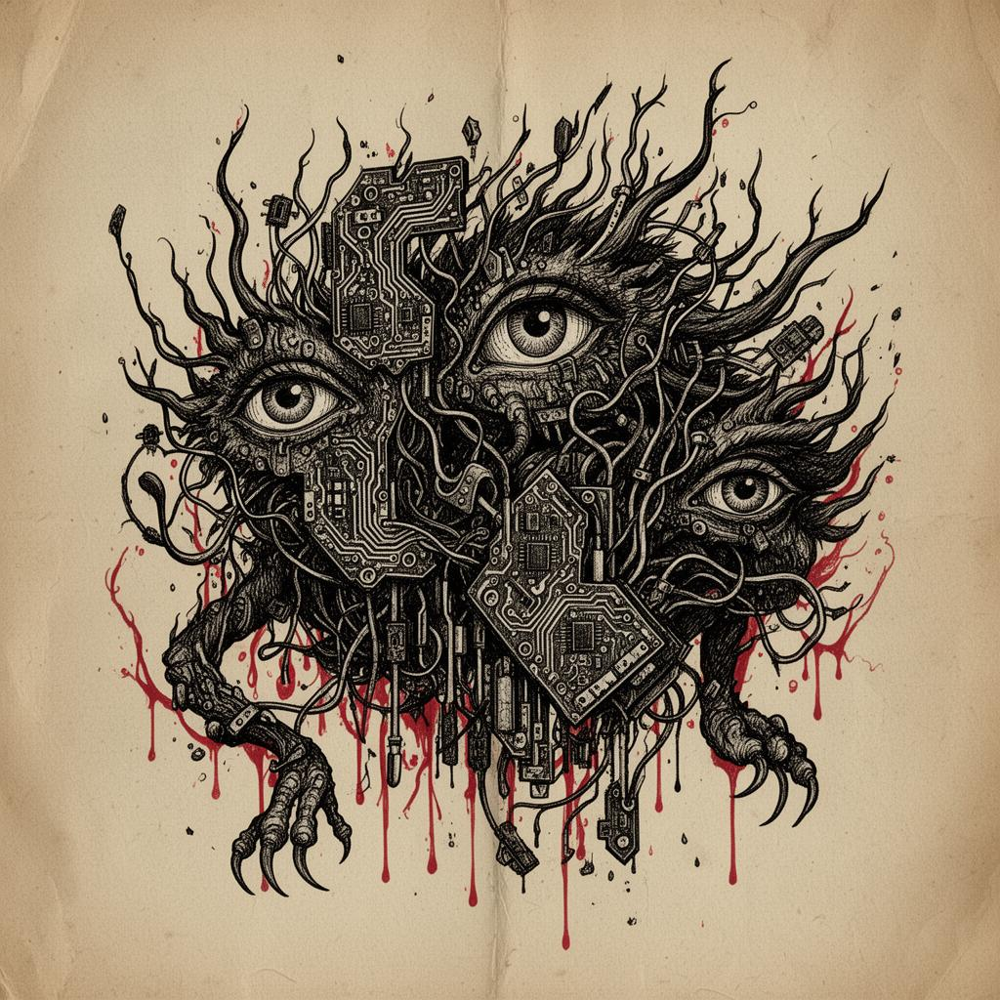

Welcome. You are traversing a digital landscape that has recently been invaded by a new terrifying creature.
They say it is coming for your job and human creativity. They say it cannot be stopped. Its name is Generative AI.
This entity has created mass panic. It is spoken of in hushed, panicked tones in classrooms, newsrooms, and online forums. But what exactly is this beast? Is it a true threat to our humanity, or is it something else?
Enter the guide below to uncover the anatomy of the modern monster. Learn how to identify it, how to survive, and most importantly, how to see the truth hiding beneath its terrifying cover.
Every society have its own monster. The medieval peasant feared dragons in the fog. The industrial worker feared the machine that would cut his hands. Today, we fear a statistical engine that solves problem within a few sentences.
We are terrified of new and powerful things, and we treat them as if they were evil creatures. We did it with electricity and the printing press as well. Every time, the fear felt true.
AI is particularly scary because it can communicate with us. It can compose poems and answer test questions. Panic spreads quickly because it appears to be thinking.
| The Myth | The Documented Behavior / The Truth |
|---|---|
| "It will replace all writers." | It just guesses the next word. Humans still need to tell it what to do. |
| "It understands everything." | It only finds patterns. It does not actually feel or understand things like a human does... |
| "It is alive." | It appears smart, but that is not the same as being alive. A smart thermostat is not alive, either. |
| "It is coming for your job." | It will only perform boring and repetitive tasks and most of the time it still requires human revision. Jobs that require genuine human care and choices are safe. |
"We dehumanize others when we conceive of them as subhuman creatures."
— David Livingstone Smith, Making Monsters (9)When we cut this monster open to look inside, it is actually very boring. There is no ghost or soul inside. It is just math and patterns.
TThe machine read almost everything humans ever wrote on the internet. It read books, rules, and chats. It used all this to learn exactly how humans talk. They try their best to learn how we talk and behave.
It breaks words into tiny pieces. Then it guesses what word should come next, like a math problem.
Billions of numerical parameters, adjusted during training to minimize prediction error. This is where it stores all the patterns it learned from human writing.
This is its short-term memory. If you talk to it too long, it forgets how the chat started.
PProgrammers wrote rules to make sure its answers are helpful and polite. It is not acting nice because it cares about you. It is just following its code.
What does all this mean? AI is just a really clear mirror. It reflects human words so well that we think it is alive.
But it is not a friend. It will not remember you tomorrow.